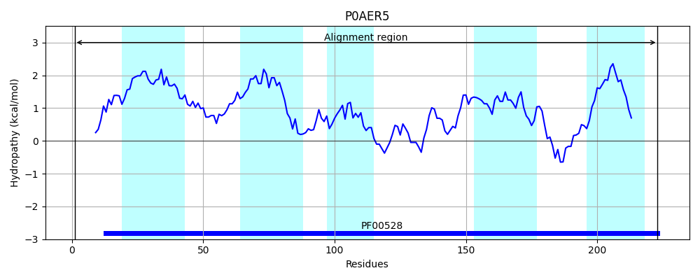
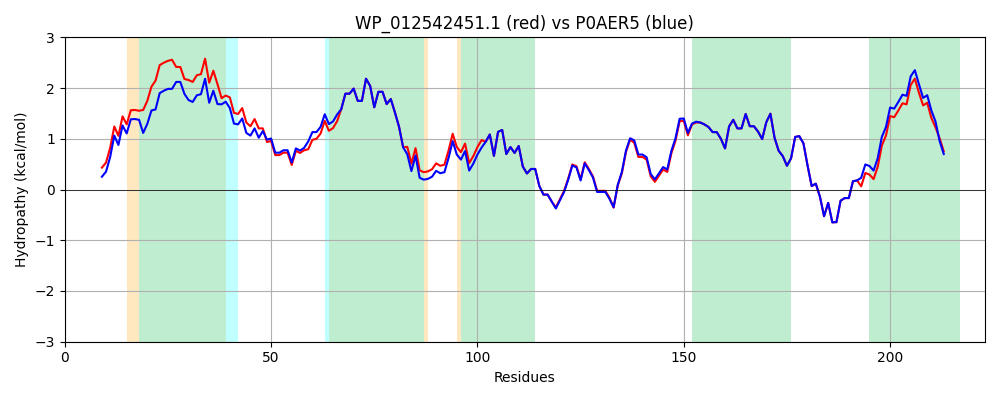

Hit Accession: P0AER5
Hit TCID: 3.A.1.3.4
Hit Description: gnl|BL_ORD_ID|8791 gnl|TC-DB|P0AER5|3.A.1.3.4 Glutamate/aspartate transport system permease protein gltK - Escherichia coli.
Mach Len: 223
e:0.000000
Query TMS Count : 5
Hit TMS Count: 5
TMS-Overlap Score: 5.650000
Predicted Substrates:CHEBI:29987;glutamate(2-)
BLAST Alignment:
Score: 1033 , Bit scores: 402 bits, E-value: 9.0e-145, Alignment length: 223, Percentage identity: 92
Query: 1 MYDFDWSSIVPSMPYLLAGLVITLKITVIAIVVGIVWGTLLAVMRLSSFLPLAWFAKTYVNVFRSIPLVMVLLWFYLIVPGFLQNVLGLSPKTDIRLISAMVAFSMFEAAYYSEIIRAGIQSISRGQSGAALALGMTHWQSMRLVILPQAFRAMVPLLLTQGIVLFQDTSLVYVLSLADFFRTASTIGERDGTQVEMILFAGGVYFVISLSASLLVSWLKKRT 223
MY+FDWSSIVPS+PYLL GLVITLKITV A+V+GI+WGT+LAVMRLSSF P+AWFAK YVNVFRSIPLVMVLLWFYLIVPGFLQNVLGLSPK DIRLISAMVAFSMFEAAYYSEIIRAGIQSISRGQS AALALGMTHWQSM+L+ILPQAFRAMVPLLLTQGIVLFQDTSLVYVLSLADFFRTASTIGERDGTQVEMILFAG VYFVISLSASLLVS+LK+RT
Sbjct: 1 MYEFDWSSIVPSLPYLLDGLVITLKITVTAVVIGILWGTMLAVMRLSSFAPVAWFAKAYVNVFRSIPLVMVLLWFYLIVPGFLQNVLGLSPKNDIRLISAMVAFSMFEAAYYSEIIRAGIQSISRGQSSAALALGMTHWQSMKLIILPQAFRAMVPLLLTQGIVLFQDTSLVYVLSLADFFRTASTIGERDGTQVEMILFAGFVYFVISLSASLLVSYLKRRT 223 | Protein Hydropathy Plots: |
|---|
 |  |
Pairwise Alignment-Hydropathy Plot:
|
|---|
|  |